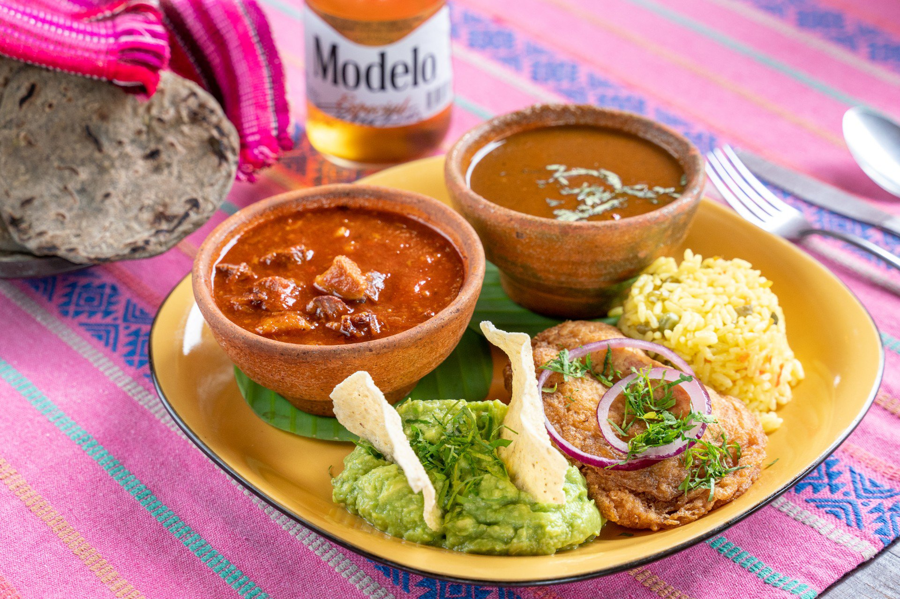
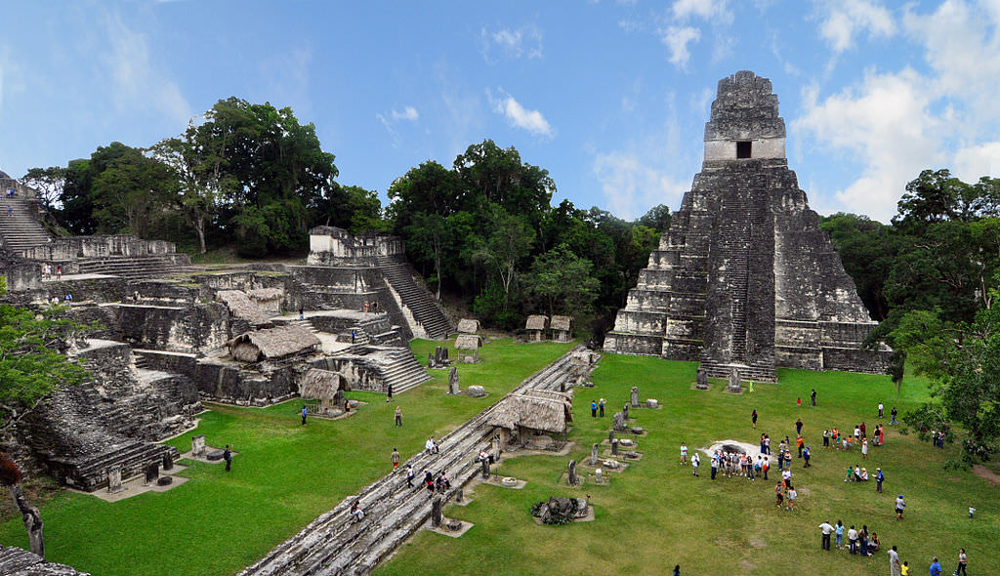
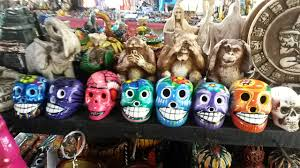
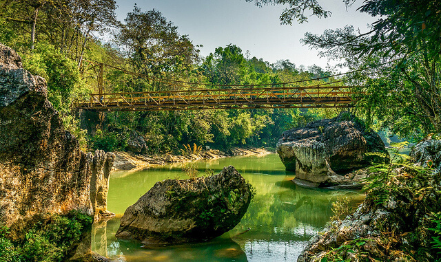
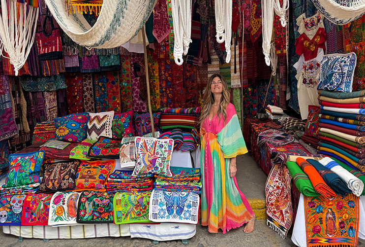

Guatemala es un pais con demasiadas tradisiones y culturas en sus hermosos lugares turisticos

La antigua cocina guatemalteca, una fusión de tradiciones mayas y españolas, se caracteriza por sus recados (salsas espesas), uso de maíz, chiles y especias. Platos emblemáticos incluyen el pepián, kaq'ik, revolcado, hilachas y chiles rellenos. En Antigua Guatemala, destacan platos tradicionales como piloyada antigüeña, molletes y dulces típicos.

Son las estructuras más famosas de Tikal. Estas pirámides escalinadas son muy empinadas y terminan en una crestería (un muro decorativo en la parte superior). Eran utilizadas para ceremonias públicas y como monumentos funerarios para los gobernantes

Las mujeres mayas mantienen la tradición del tejido en telar de cintura. Los diseños de los huipiles (blusas tradicionales) varían de un pueblo a otro, representando la historia y la identidad de cada comunidad.

En idioma Q'eqchi', Semuc Champey significa "donde el río se esconde bajo la tierra". Este nombre hace honor a su mayor atractivo: un puente natural de piedra caliza de 300 metros bajo el cual fluye el caudaloso río Cahabón.

Es famoso por sus tejidos hechos a mano en telar de cintura, como los huipiles. Cada diseño, color y símbolo (como el maíz, el jaguar o el quetzal) cuenta una historia y representa la cosmovisión maya y la identidad de cada comunidad.